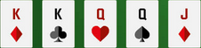

Royal Flush
Number One
The king of all hands! It’s the unbeatable combo of A, K, Q, J, and 10 all in the same suit. If you land this, feel free to bask in your glory—nothing tops it.
Straight Flush
Number Two
Almost as rare as its royal cousin, this is five consecutive cards of the same suit (like 6-7-8-9-10 of diamonds). It’s the silent assassin—smooth, deadly, and nearly unbeatable.
Four of a Kind
Number Three
Talk about domination! Four cards of the same rank (like four Queens) show you mean business. Just one card away from a Full House, but way more intimidating.
Full House
Number Four
A powerful mix of three of a kind and a pair (like three Kings and two 5s). It’s like having backup dancers that are just as good as the lead—balanced and beautiful.
Flush
Number Five
Five cards of the same suit, all dressed to impress but without needing to be in order (like 2-5-8-J-K of hearts). It’s stylish, sophisticated, and surprisingly strong.
Straight
Number Six
Five consecutive cards of mixed suits (like 4-5-6-7-8). It’s all about order and progression—no need for matching outfits when you’ve got perfect choreography.
Three of a Kind
Number Seven
Three cards of the same rank (like three 9s). It’s solid and dependable, like a trusty sidekick that packs a punch.
Two Pair
Double trouble! Two pairs of different ranks (like two Jacks and two 3s). It’s not flashy, but it’s crafty and can catch opponents off guard.
Two Pair
Number Eight
Double trouble! Two pairs of different ranks (like two Jacks and two 3s). It’s not flashy, but it’s crafty and can catch opponents off guard.
One Pair
Number Nine
Just two cards of the same rank (like two 7s). It’s the bare minimum for feeling a little confident—like finding a $20 bill in an old coat pocket.